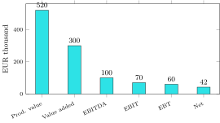

Model
Statutory scheme (art. 2425 c.c., simplified)
| Section | Items |
|---|---|
| A Value | 1 sales net of returns, discounts, allowances; 2 change in |
| of | WIP, semi-finished and finished goods (closing − opening); |
| produc- | 3 change in contract work in progress; 4 capitalized own |
| tion | work (internal construction); 5 other revenues (rent income) |
| B Costs | 6 raw materials, consumables, goods; 7 services; 8 use of |
| of | third-party assets (rent, leasing); 9 personnel (wages, social |
| produc- | charges, TFR); 10 depreciation and write-downs; 11 change in |
| tion | raw-material stock (opening − closing); 12 risk provisions; |
| 13 other provisions; 14 sundry operating charges | |
| C Fin. | 15 income from shareholdings (dividends); 16 other financial |
| income; 17 interest and other financial charges; 17-bis | |
| exchange gains and losses | |
| D Adj. | 18 revaluations; 19 write-downs of financial assets |
| Taxes | 20 current, deferred and prepaid taxes (e.g. IRAP) |
| Result | 21 profit (loss) for the year |
Production value measures the firm's size and productive capacity in the period; production costs are all charges to turn materials into products or deliver services (materials and services, direct labour, depreciation of machines, factory overheads). Older schemes also had an extraordinary section (E), removed from the current statutory scheme (OIC 12).
Value-added reclassification
- Production value − external costs (materials, services, rentals, change in raw-material stock) = value added;
- value added − personnel costs = EBITDA (margine operativo lordo, MOL);
- EBITDA − depreciation, write-downs, provisions = EBIT (reddito operativo, RO);
- EBIT ± non-core, financial and value-adjustment items = EBT (pre-tax result);
- EBT − income taxes = net result.
EBIT = earnings before interest and taxes; EBT = earnings before tax. (Some course material labels the pre-tax result "EBIT": keep the two distinct.) Other reclassifications: cost of sales (needs management accounts to split core from non-core) and contribution margin. Raw materials consumed: .
Worked example
| Item | EUR |
|---|---|
| Sales | 500,000 |
| + increase in finished goods | 20,000 |
| = Production value | 520,000 |
| − materials consumed (10 + 50 − 15 k) | 45,000 |
| − services, rentals | 175,000 |
| = Value added | 300,000 |
| − personnel | 200,000 |
| = EBITDA | 100,000 |
| − depreciation and provisions | 30,000 |
| = EBIT | 70,000 |
| − net interest | 10,000 |
| = EBT | 60,000 |
| − taxes | 18,000 |
| = Net profit | 42,000 |
Unsold production (+20,000) raises production value without bringing cash.
Pitfall
EBITDA is not operating cash flow. Production value ≠ net sales. The sign of a stock change differs: finished goods in A (closing − opening), raw materials in B (opening − closing).
Recall
List sections A–D and key items; write the value-added cascade to net result; compute materials consumed.
Picture

Each subtotal removes one layer of cost.